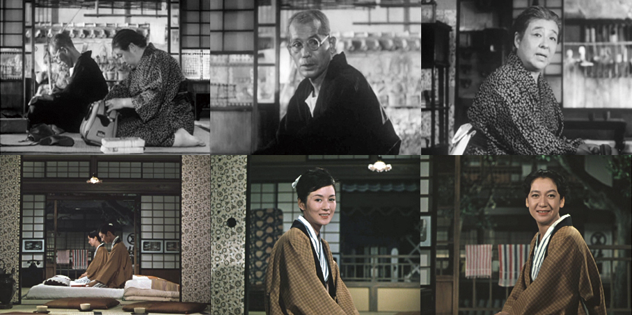
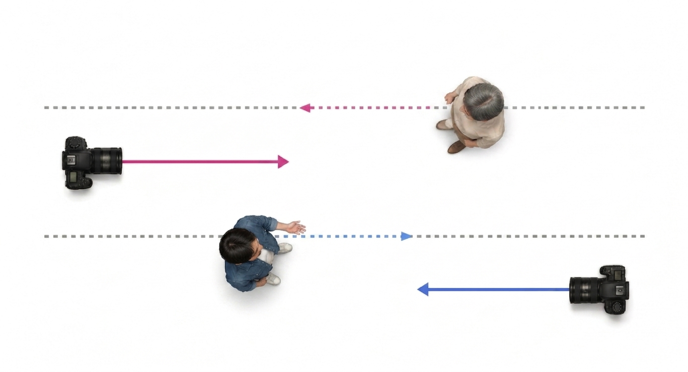
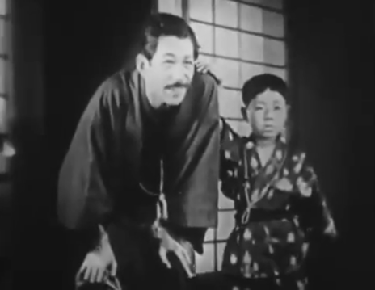
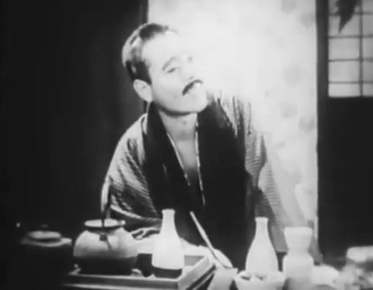
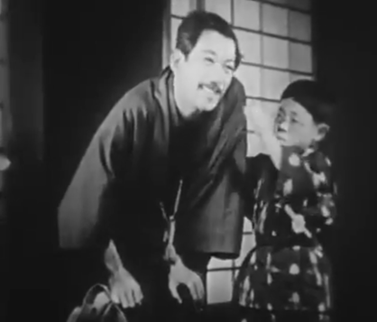
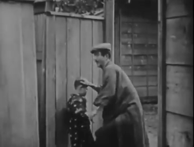
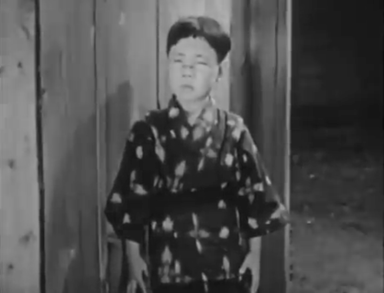
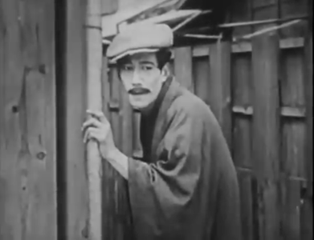
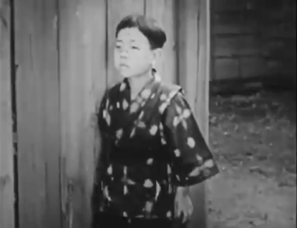

Supplement: 小津
and the Imaginary Line
There is a rule that helps keep a conversation sequence smooth, known as the imaginary line rule for camera placement (also: the line of action, or the 180° rule). It establishes an uninterrupted third-person point of view across a sequence of conversation shots.
- The camera stays on one side of the imaginary line joining the two speakers (within the 180° arc).
- This keeps each character’s left/right screen position consistent, so they appear to look at each other across the cuts.

- Ozu’s (re)placements of the camera create shots of similar composition: a speaker in isolation is always positioned at the center of the shot, with their eyes directed in the same direction.
- He may not be interested in adhering to Hollywood film conventions. Instead, he focuses on organizing each shot in terms of image composition. His style prioritizes the aesthetic of composition over plot or smooth storytelling.
- We will see this in the beach conversation sequence in Early Summer (1951, ~1:50:38) in a few weeks.

- Seen from above, Ozu places the camera on both sides of the line. Each character is shot nearly frontally, centered, looking in a consistent on-screen direction.
- Their gazes do not truly meet — they extend in parallel, the same way across cuts.
- What looks like a “mistake” is a deliberate search for compositional continuity rather than storyline continuity.

In Tokkan Kozo (突貫小僧, A Straightforward Boy, 1929), during the sequence where the kidnapper brings the boy to his boss, the camera clearly crosses the imaginary line of the conversation and their bodies face the same way on the screen — a technique more commonly recognized as a hallmark of Ozu’s later works.



During the sequence where the boy and the kidnapper meet for the first time, it is not immediately obvious that the camera crosses the imaginary line. But Ozu’s preference for placing the conversing characters at the center of each shot is already evident.




In the second shot of the boy, he faces more sharply to the left, filmed with the camera just past the left side of the imaginary line. This shift causes the bodies of the boy and the kidnapper to now face the same direction (compare the two shots of the boy with that of the kidnapper holding the bamboo stick). Ozu prioritizes how the boy appears on screen, synchronizing the boy’s shot with the kidnapper’s in placement and direction.
It is difficult to determine the exact placement of the camera in the boy-and-kidnapper sequence, but it is safe to assume that Ozu’s directorial choices are motivated by something other than conventional cinematic grammar.
We can conclude that Ozu’s compositional aesthetics were already evident in his silent era, and would eventually become a hallmark of his films — Late Spring, Early Summer, Tokyo Story, and beyond.
- Hasumi frames exactly what we have seen on screen: “Eyes appear to look at each other, but eyelines fail to meet as they extend past each other in parallel” (HS, p. 154).
- This was a deliberate policy, not an oversight: Ozu’s editor Yoshiyasu Hamamura is known to have raised the 180-degree-rule issue, but Ozu did not change course. As Truffaut observed, this was “clearly an intentional directorial policy” (HS, p. 154).
- Hasumi warns us not to confine the phenomenon within negative rhetoric about a “failed eyeline match, an utterly elementary technical mistake” (HS, p. 154). The strangeness is the point, not a deficiency of craft.
“There are constantly scenes of two people facing each other and talking, with a lot of cutting back and forth, but these cuts give an impression of being strangely off. … every time we have a cut, the other person ceases to be there.” — François Truffaut, interview (HS, pp. 153–54)
“What is most important for Ozu is not the positional relationship between the eye and its object, or whether eyelines meet, but the mere fact that they extend in the same direction.” — Hasumi, ch. 5 “Looking” (HS, p. 129)
- It names what we saw in Tokkan Kozo: gazes parallel, not meeting.
- It reframes “breaking the rule” as a positive aesthetic, not an error.
- Audiences are often story-centric, prioritizing storyline over other elements. If we free our minds for cinema viewing, we can keenly sense compositional continuity (as part of narrative continuity) as its own pleasure — perhaps even some previously “bad” movies could be appreciated in a new light.
- Shiguéhiko Hasumi, Directed by Yasujiro Ozu, trans. Ryan Cook (Univ. of California Press, 2024) — ch. 5 “Looking” & ch. 6 “Holding Still.” [HS = Hasumi; P = Prologue]
- David Bordwell, Ozu and the Poetics of Cinema — full text (U. Michigan).
- A Straightforward Boy (突貫小僧, 1929) — Le Cinéma Club.
- I Was Born, But… — SF Silent Film Festival.
Film stills © Shōchiku Co., Ltd., reproduced for classroom discussion. JPN/FST 266, Miami University.